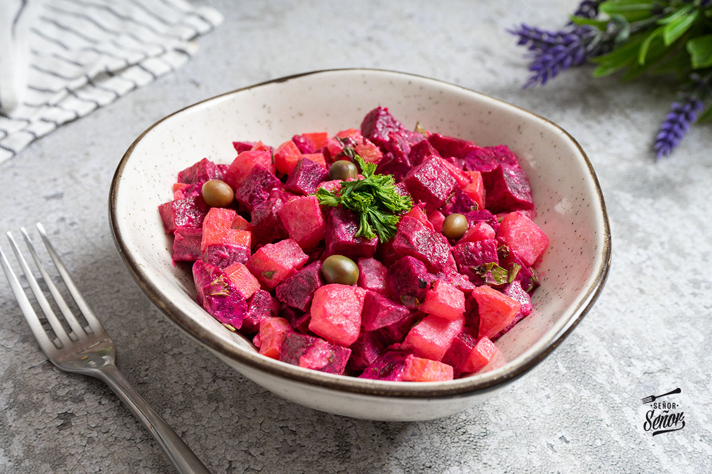

Ingredientes
- Remolacha
- Patata
- Zanahoria
- Judías verdes
- Mayonesa
- Zumo de limón
- Sal al gusto
Preparación
Para preparar una clásica ensalada rusa, cocina en agua hirviendo con sal unos 500 gramos de papas y 300 gramos de zanahorias (ambas peladas y cortadas en cubos pequeños), junto con 150 gramos de arvejas (guisantes) frescas o congeladas, asegurándote de que las verduras queden cocidas pero firmes antes de escurrirlas y dejarlas enfriar por completo; en un tazón grande, combina los vegetales ya fríos con unos 100 gramos de pollo desmenuzado o atún en conserva si deseas darle proteína (opcional), añade aproximadamente media taza de mayonesa de buena calidad, un chorrito de jugo de limón, sal y pimienta al gusto, mezclando todo suavemente para integrar bien los ingredientes sin deshacer las verduras; finalmente, refrigera durante al menos una hora para que se asienten los sabores y sirve fría, decorando si lo deseas con huevo duro picado o en rodajas por encima.
Volver a las recetas